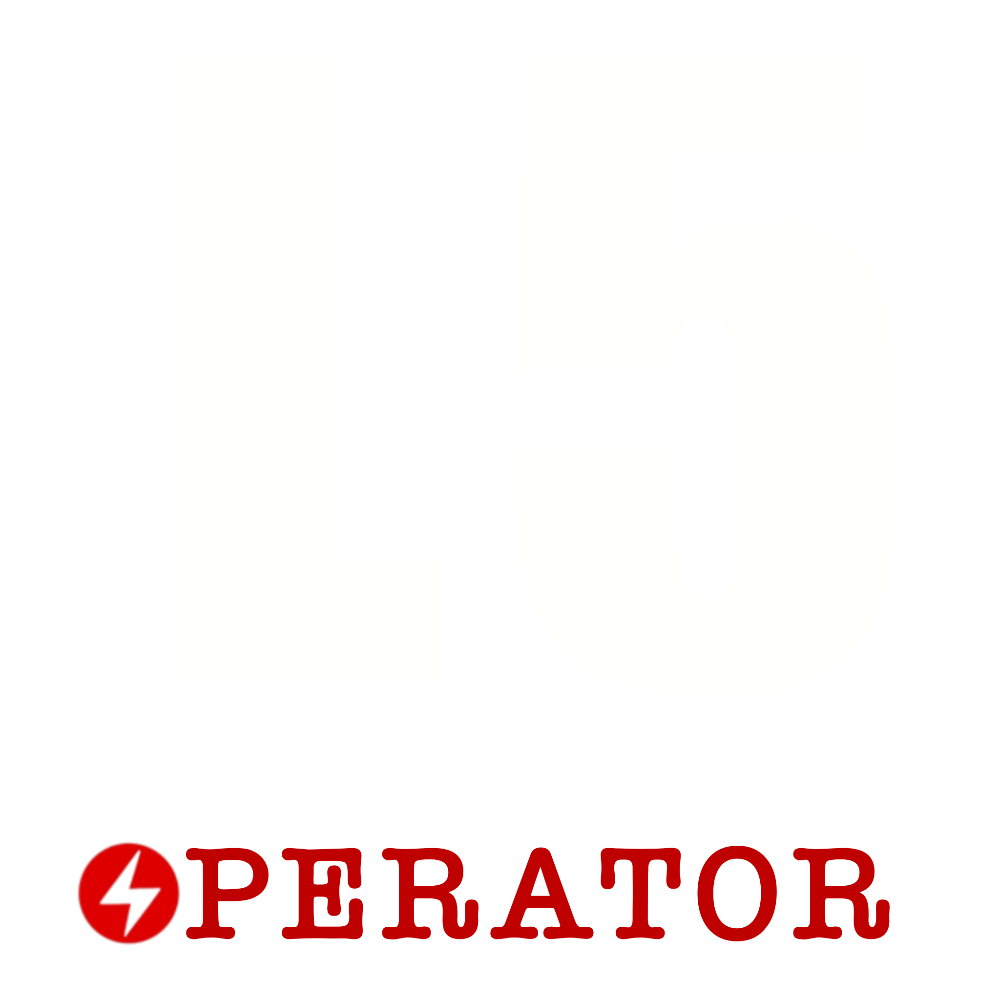
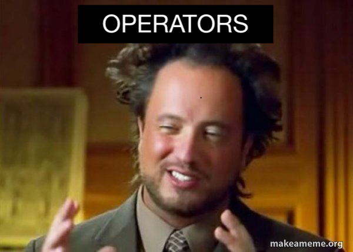
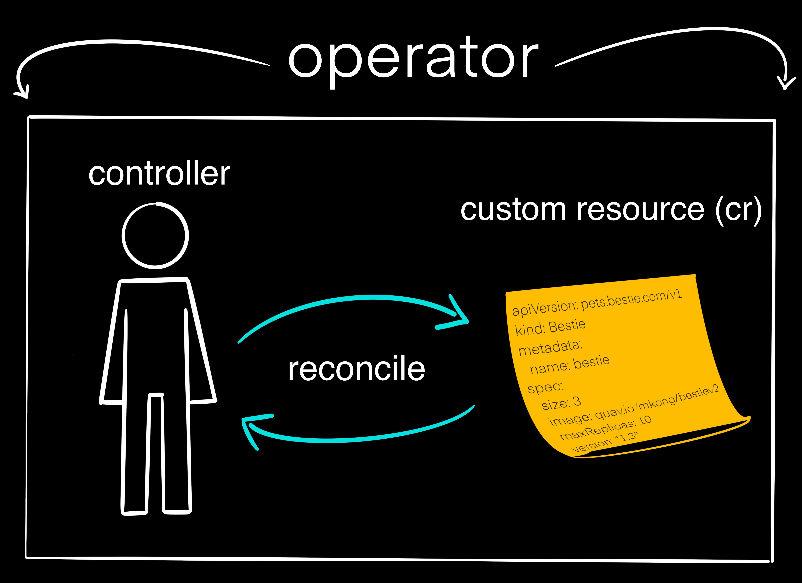
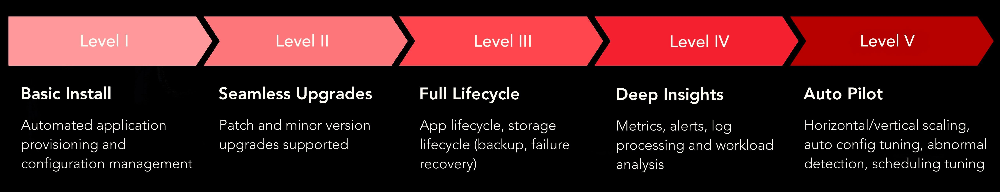
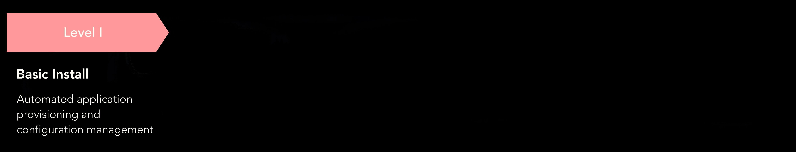
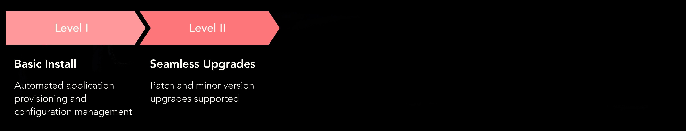
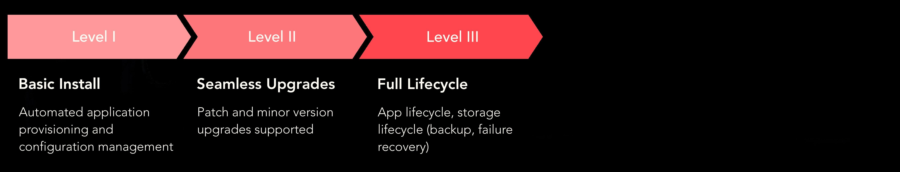
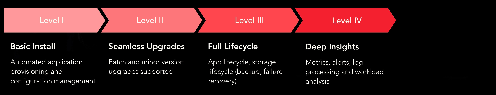

From Zero to
Auto Pilot
Exploring Kubernetes Operator Capability Levels


Operator Framework

Level 1: Basic Installation 
Level 2: Seamless Upgrades 
Level 3: Full Lifecycle 
Level 4: Deep Insights 
Level 5: Auto Pilot
Thank you!
https://github.com/opdev/l5-operator-demo